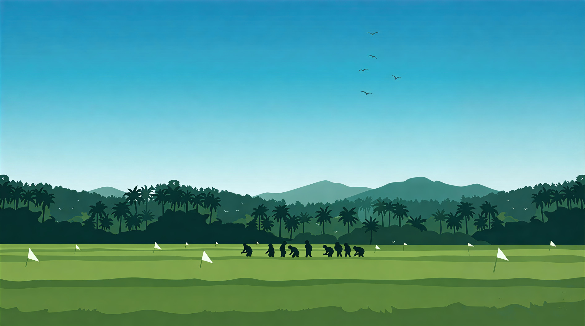
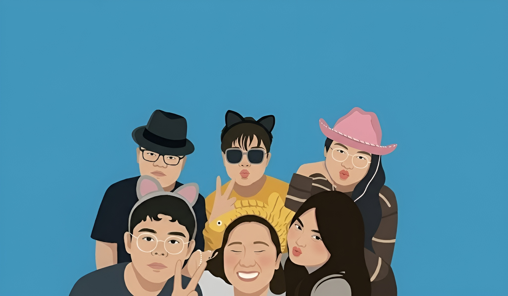

From the quiet fields of the province to the complex logic of code — a life told in chapters.

The quiet, open fields of Mahayag, Zamboanga del Sur.
My story began in Mahayag, Zamboanga del Sur, a place where time seemed to move a little slower. With my parents away working to provide for us, I was raised by my Lolo and Lola in their humble home on the farm. It was a life of simplicity — surrounded by open fields, the smell of earth, and the sounds of nature — but it was also a life of isolation. Our neighbors were distant, and often, my only companions were the cats and dogs roaming our yard.
Because I lacked playmates, I learned to find joy in the mundane. I would spend hours sitting on the porch, mesmerized by the chickens pecking at their feed. My fondest memories were the quiet afternoons spent fishing with my grandfather. Whether we caught something or came home empty-handed didn't matter; it was the silence we shared that I cherished.
I stole my cousin's slippers and threw them away, thinking that if they couldn't walk, they couldn't leave.
The house only truly felt alive when my cousins visited. There was magic there too — a season when the house would fill with butterflies of every color. Walking home alongside my grandfather to the smell of my grandmother's cooking is a memory I still hold close.

Moments of laughter and chaos with high school friends.
Transitioning into high school was a shock to the system. I went from the quiet isolation of the farm to a world of noise, chaos, and social awkwardness. In Grade 8, in a desperate attempt to get exempted from some subject requirements, I made the terrifying decision to join the school pageant. I remember standing on that stage, knees shaking uncontrollably, blinded by the lights, instantly regretting my choice. Yet, looking back, that moment of vulnerability was my first step out of my shell.
I eventually found my tribe — a group of friends who were loud, chaotic, and always ready for adventure. Our sanctuary was the local Lemon Square, where we'd hoard snacks and scream over intense matches of mobile games.
I would study late into the night just for the brief moment of validation when I could raise my hand and answer correctly.
But just as we were hitting our stride, the world stopped. The COVID-19 pandemic hit, and our high school life was cut short without a proper goodbye. The prom, the graduation rites, the final days of just being kids — all canceled. It taught me to value the memories we did manage to make before the world went quiet.
The new reality: sleepless nights and syntax errors.
College was supposed to be the start of my dream to become a nurse. I had a vision of myself in white, taking care of people, healing them. I applied to PLM and UE, holding onto that hope. But life had a different plot twist waiting for me. PLM ran out of slots, and with my options limited, I found myself enrolling at UE for a course I barely understood: Computer Science.
I walked into this field thinking it would be about computers; I didn't realize it would be about logic, patience, and failure. The learning curve was brutal. I remember the rush of my first "Hello World," followed immediately by nights where I stared at a monitor for six hours hunting for a single missing semicolon.
It is a love-hate relationship; the frustration is overwhelming, but the dopamine rush when a code finally runs is addictive.
Along the way, I discovered that Computer Science isn't just about math and logic — it's a canvas. My interest in Game Development and Web Design allowed me to bridge my technical skills with my creative side. I may not be a nurse, but I am learning to build things that help people in a different way — one syntax error at a time.